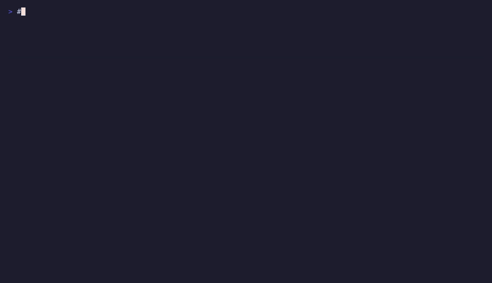

Run a full AI stack locally on AMD — no NVIDIA, no CUDA
Self-hosted LLM chat, image generation, web search and agent tools on a single AMD Radeon GPU with ROCm. Private, offline-capable, and free of the NVIDIA tax.
Self-hosted LLM chat, image generation, web search and agent tools on a single AMD Radeon GPU with ROCm. Private, offline-capable, and free of the NVIDIA tax.

Large models usually mean paying the NVIDIA premium — but you don't have to. Modern AMD Radeon cards offer a lot of VRAM per dollar, and the open ROCm stack now runs the full local-AI toolchain well. ai-stack packages the images, flags and VRAM management so it works out of the box.
git clone https://github.com/wildcommitter/ai-stack.git && cd ai-stack
./scripts/install.sh
./download-model.sh all <HF_TOKEN>
systemctl --user start ai-stack.service
# open http://localhost:3000Yes. Every component runs on AMD ROCm — llama.cpp for the LLM, ComfyUI for images — no NVIDIA card or CUDA needed.
Yes. Open WebUI gives a familiar chat UI over a local model; nothing leaves your machine and there are no API keys or fees.
Yes, via ComfyUI on ROCm, callable directly from the chat.
Developed on the AMD Radeon AI PRO R9700 (32 GB, RDNA4, gfx1201). Other ROCm Radeon cards work with minor tweaks; more VRAM runs larger models.
They don't run at once — llama-swap unloads the chat model on idle and the image tool frees it before a ComfyUI job, so one 32 GB card handles both.